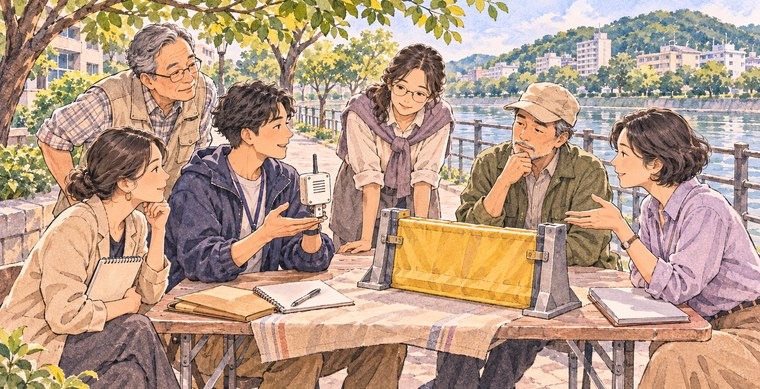

SUS-30 · 虚构的滨水社区 · 15–20 分钟 · 适应路径 · 以证据触发决策 · 参与式治理
新的防护安排，何时调整由谁参与决定？

适应路径既需要证据，也需要决策规则
泰晤士河口2100计划的做法是持续监测、按期更新计划，而不是把适应计划当作一次性决策。该计划在2026年的监测评估表明，除了水位，证据质量、设施状况和社区面临风险的变化也可能影响决策。
新西兰2024年的海岸适应指南区分了监测信号、决策触发条件，以及某个方案不再能实现目标的临界点，从而为行动留出时间。新西兰国家水与大气研究所的介绍强调社区参与和不确定性；政府间气候变化专门委员会的评估则强调包容、灵活的规划，以及不当适应一旦固化所带来的风险。这些资料为虚构的治理练习提供参考，不是工程阈值或应急指令。
课堂决策
虚构的课堂情境。 一个滨水社区小组就庭院防洪适应计划向地方主管部门提出建议。法定决策仍由主管部门作出，应急响应、维护和安全职责也仍由该部门承担。一名具备资质的工程师已批准现有防护设施在遵守主管部门巡检和应急程序的前提下继续使用。这里要做的并不是决定能否忽视安全警报。
小组比较两种方案：定期审查方案每三年开展一次全面审查；触发审查方案保留同样的三年兜底安排，但如果庭院传感器显示水位达到或超过当地基准标记上方 0.30 米，且连续至少十分钟，就提前审查。无论审查定在何时，两种方案都保留例行巡检、官方预警和对有可信迹象的危险作出紧急响应的安排。这个传感器阈值是为教学虚构的，只是规划信号，并非现实中的安全水深标准。
无论采用哪种方案，全面审查都会考虑维修、试用可拆卸挡水设施、改善排水，以及是否有必要建永久挡水墙。没有预先选定任何措施。施工前须完成工程评估、取得相关许可、落实资金，并获得主管部门批准。从获准实施到挡水墙完工需要十八个月。小组无法预测现有防护何时可能无法实现目标，因此十八个月的工期还不足以证明任何触发条件都能留出足够的时间。
年度规划预算为60,000港元，用于监测、证据核查和沟通参与，与另有保障的应急和维护预算分开。定期审查方案的固定活动费用为20,000港元；触发审查方案加强核查和沟通参与，费用为35,000港元。每额外触发一次全面审查，费用为10,000港元。这些数字涵盖本练习中的全部年度规划费用。不能只凭酒店经营者或物业业主的偏好来支持任何一种方案：租户、店员、有无障碍需求的人士和邻近社区都必须有机会参与。
| 初始规划项目 | 港元 |
|---|
| 定期审查方案的年度固定活动 | 20,000 |
| 触发审查方案的年度固定活动 | 35,000 |
| 每次额外触发的审查 | 10,000 |
| 年度规划预算 | 60,000 |
你的决策你会选定期审查，还是触发审查？说明审查时点上的权衡、受影响居民的角色，以及在用审查触发条件支持长期适应路径之前，还需要明确什么。
第二轮 · 多了一项资料
第一年，传感器连续十二分钟报出 0.34 米的读数，因此原始数据有一次达到规定的触发条件。事后检查发现，传感器的固定支架松动，读数不可靠。独立参照水位计和现场观察都未能证实这次事件的水深。现有证据既不能确认水位达到阈值，也不能证明当时没有洪涝风险。
主管部门立即按现行安全程序核查现场情况。在这一课堂情境中，工程师批准在仪器维修期间采取一项可撤回的临时预防措施：使用事先设计好的可拆卸挡水设施，在专人监督下安排无障碍通行，不堵塞紧急出口，也不把水患风险转移给邻近社区。措施由具备资质的人员实施，不要求居民临时自行搭设防洪设施。所需的独立运行经费已落实。
小组收到两项新的规划费用报价：独立核验并维修传感器需8,000港元，加急开展一次全面计划审查需10,000港元。两项费用都不包含在触发审查方案35,000港元的固定活动费用内；本年度没有其他因触发条件而开展的审查。小组可以公布事件的初步记录，邀请受影响群体审视证据，并请主管部门决定下一步怎么做、说明理由。小组无权批准建设不可逆的挡水墙。
今后的触发机制需要事先约定核验流程、明确具体负责人和响应时限，并规定数据不可靠或缺失时怎么办。紧急行动不能等统计确认或社区投票。反过来，单次可疑观测也不能自动让社区走上永久性施工这一步。案例没有提供经校准的洪涝发生概率，也没有提供挡水墙的效益估算。
你的决策看到这个读数后，你会怎么做？算出规划支出，区分临时预防、证据核验和施工，并提出一套能让各方参与的规则，用来决定是否调整适应路径。
审查机制怎么选
优先选择 保留三年兜底安排的触发审查方案，前提是监测和响应能力可靠。定期审查在管理上更简单，每年的固定活动费用也少15,000港元，但只按日程审查可能推迟对调整方案的讨论。两种做法都不能替代应急职责。触发审查不等于马上施工，而是启动有明确程序的审议。
先与受影响群体商定目标，再明确要观察哪些证据、如何可靠地收集和核验、由谁负责，以及审查后会采取什么行动。在合理的情景下，估算防护措施还能满足目标多久，再与各备选措施所需的设计、审批和施工时间比较。挡水墙需要十八个月，这只是分析的一项输入，并不能证明 0.30 米的信号足以留出行动时间。
如何处理可疑读数
原始读数符合拟定的信号条件：0.34 ≥ 0.30 米，且十二 ≥ 十分钟。由于固定支架不牢，读数是否有效仍未确定。把观测结果和设备缺陷都记录下来；既不要悄悄删掉警报，也不要把它当作已经证实的趋势。维修仪器并进行独立核查期间，继续执行已获批准的可撤回预防措施和现行应急程序。
加急开展一次审查，核看证据、比较备选措施，而不是自动决定建墙。触发审查方案固定活动35,000港元 + 核验及维修8,000港元 + 审查10,000港元 = HK$53,000，因此60,000港元的规划预算还剩7,000港元。如果再做一次费用为10,000港元的审查，就会比剩余预算多出3,000港元；应按程序申请追加经费，而不是挪用已有保障的应急资源。这里没有计算避免损失所带来的效益。
一套有据可依的核验与参与规则
传感器发出警报后，立即建立事件记录，并由负责人员马上开展安全检查。独立技术核验要检查固定情况、校准情况、参照数据和现场观察结果。负责人员应按事先约定的服务时限及时报告结果；如有不确定性或数据缺失，应上报处理，而不是无限期等待。实际时限和技术容差须由当地具备资质的专业人员制定，不能在课堂上随意设定。
审查小组应包括主管部门的工程师，并以无障碍方式保障租户、工作人员、业主、有无障碍需求的人士及邻近地区的代表参与。公布证据、不确定性、分配效应和主管部门的决策理由。除了线上渠道，也要提供非数字化的参与方式，以及对证据提出异议的渠道。参与可以影响目标和权衡，但不能靠投票免除安全职责，也不能投票剥夺其他社区的权利。
保留选择，不等于把一切往后拖
主管部门可以在改进监测的同时沿用现有路径，也可以试行可撤回的措施、委托开展进一步设计，或在证据支持时调整路径。即使没有出现可靠的信号，也要保留三年兜底审查；除了水位，还要检查人口、生态和通行条件的变化。事件发生后，要评估触发机制是否有效，并在下一次事件前公开商定如何修订。
传感器不可靠，说明需要修复证据收集和核验机制，而不是放弃适应。最终或许有理由建永久挡水墙，但要评估它是否会转移风险、如何影响通行和生态，以及成本和实施所需时间。临时措施也要监测，并明确决定何时结束或是否延续；可撤回并不意味着没有危害。
教师说明
要求学生区分四个关口：即时安全响应、证据核验、审议计划和获准实施。案例有意不提供现有防护失效的日期或洪涝发生概率。学生无法据此推导出最优触发条件，也无法算出挡水墙的净现值。
SUS-14 讨论如何选择高温应对设施；STR-08 比较不同情景。本案例讨论由谁重新审视计划，以及不确定的证据如何影响计划调整。只有当学生可信地说明如何在确保履行强制性应急响应要求的同时，让新出现的证据促成必要的重新审议，才接受定期审查方案。不要给把征求意见等同于就工程安全举行全民投票的答案加分。
第二轮
第一年，传感器连续十二分钟报出 0.34 米的读数，因此原始数据有一次达到规定的触发条件。事后检查发现，传感器的固定支架松动，读数不可靠。独立参照水位计和现场观察都未能证实这次事件的水深。现有证据既不能确认水位达到阈值，也不能证明当时没有洪涝风险。
主管部门立即按现行安全程序核查现场情况。在这一课堂情境中，工程师批准在仪器维修期间采取一项可撤回的临时预防措施：使用事先设计好的可拆卸挡水设施，在专人监督下安排无障碍通行，不堵塞紧急出口，也不把水患风险转移给邻近社区。措施由具备资质的人员实施，不要求居民临时自行搭设防洪设施。所需的独立运行经费已落实。
小组收到两项新的规划费用报价：独立核验并维修传感器需8,000港元，加急开展一次全面计划审查需10,000港元。两项费用都不包含在触发审查方案35,000港元的固定活动费用内；本年度没有其他因触发条件而开展的审查。小组可以公布事件的初步记录，邀请受影响群体审视证据，并请主管部门决定下一步怎么做、说明理由。小组无权批准建设不可逆的挡水墙。
今后的触发机制需要事先约定核验流程、明确具体负责人和响应时限，并规定数据不可靠或缺失时怎么办。紧急行动不能等统计确认或社区投票。反过来，单次可疑观测也不能自动让社区走上永久性施工这一步。案例没有提供经校准的洪涝发生概率，也没有提供挡水墙的效益估算。
你的决策看到这个读数后，你会怎么做？算出规划支出，区分临时预防、证据核验和施工，并提出一套能让各方参与的规则，用来决定是否调整适应路径。